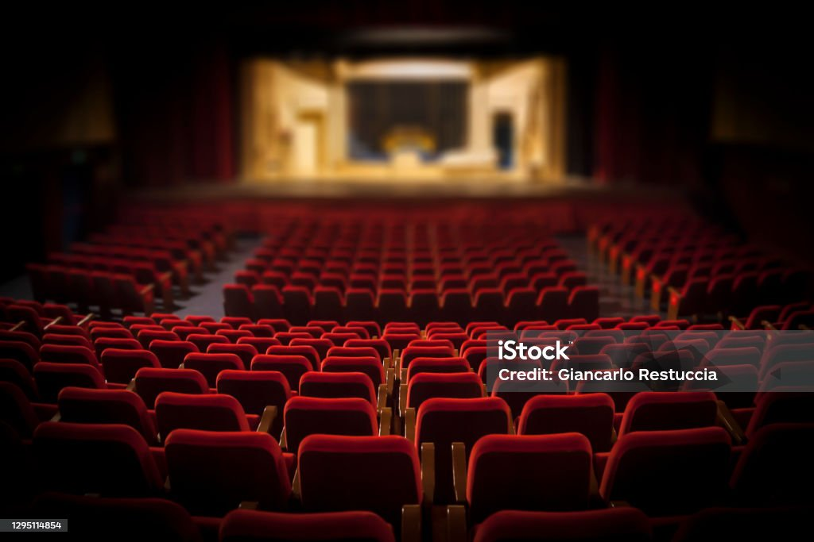

Chi Siamo

La Scuola di Teatro Corpus Domini, con sede a Bologna, offre corsi di recitazione per tutti i livelli, mirati a sviluppare le capacità artistiche e creative dei partecipanti. Il nostro obiettivo è creare un ambiente accogliente e stimolante dove ogni studente può esprimersi liberamente e crescere artisticamente.
I Nostri Corsi
Il programma dei corsi è suddiviso in trimestri e prevede un percorso formativo che abbraccia tutte le tecniche fondamentali della recitazione, dalla voce al movimento scenico, fino alla preparazione di performance teatrali.
- Primo Trimestre: Introduzione e Base
- Secondo Trimestre: Tecniche Avanzate
- Terzo Trimestre: Approfondimento e Interazione
- Quarto Trimestre: Realizzazione e Performance
Contattaci
Indirizzo: Via Enriques 56, Bologna, presso la Chiesa del Corpus Domini
Telefono: 051 540017
Email: parrocchiacorpusdominibo@gmail.com